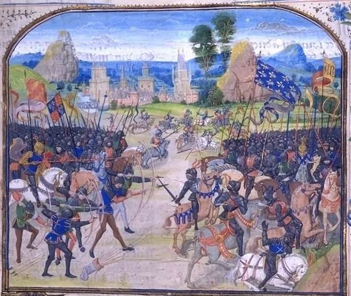

Cauzele razboiului
Afli cum rivalitatea dinastica si interesele economice au aprins un conflict de peste un secol.
Razboiul de 100 de Ani (1337–1453) a fost o serie de conflicte armate intre Regatul Angliei si Regatul Frantei, disputate pentru controlul tronului francez. A durat mai bine de un secol si a schimbat definitiv fata Europei medievale.
Din acest conflict s-au nascut identitati nationale puternice, tehnici militare revolutionare si figuri legendare precum Ioana d'Arc, care au marcat istoria universala.

| Rol | Nume |
|---|---|
| Profesor coordonator | Acatrinei-Vasiliu Cristinel-Petrică |
| Elev | Brana Mihai-Alexandru |
Afli cum rivalitatea dinastica si interesele economice au aprins un conflict de peste un secol.
Descoperi cele mai decisive confruntari militare, de la Crecy si Agincourt pana la Orleans.
Inveti fapte surprinzatoare despre aceasta epoca care a dat nastere Europei moderne.
Razboiul de 100 de Ani a reprezentat un punct de cotitura in istoria medievala europeana. A pus capat sistemului feudal traditional, a accelerat dezvoltarea statelor nationale si a lasat o mostenire culturala si militara care se simte si astazi in relatiile dintre Anglia si Franta.